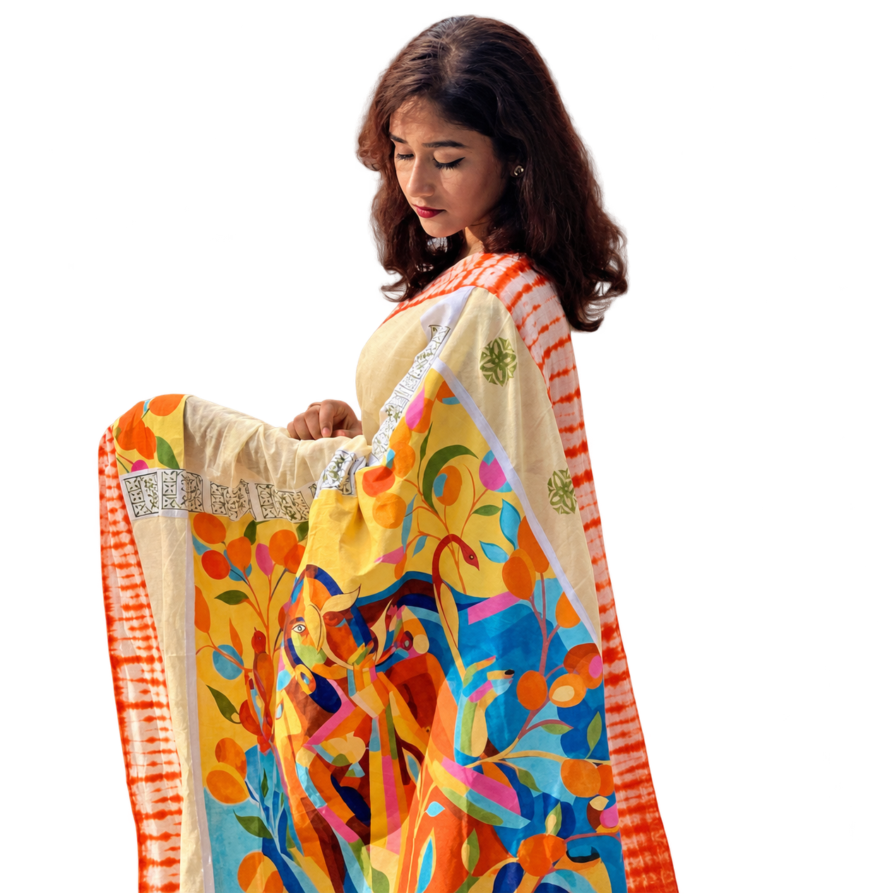

Selected look 03 / Hridita Huq
Colour stories
Colourful sari
A cream sari with a colourful panel of figures and botanical shapes. Orange, blue, yellow, and pink bring the fabric to life, framed by patterned borders.
The look
A vivid canvas
Orange, blue, yellow, and pink meet on cream.
Illustrated detail
Figures and botanical shapes unfold across the drape.
Patterned borders
Graphic edges frame the colour and imagery.
The palette
Cream / orange / blue / pink

A story in colour, carried through the drape.